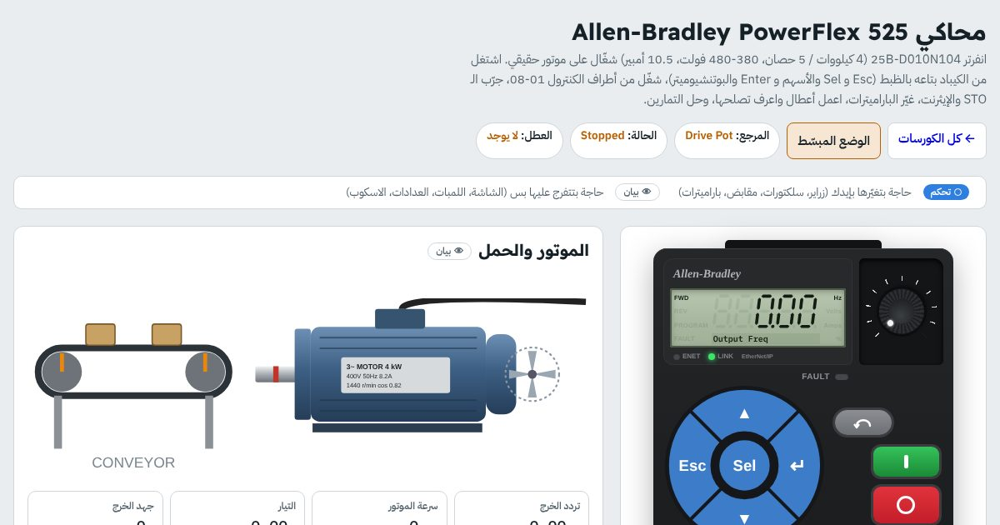

كورس · 16 محاكي انفرتربالعربي
كورس الانفرترات (VFD)
توصّل الانفرتر وتكتب باراميتراته من نفس الكيباد وتشغّل الموتور وتصلّح أعطاله، على 16 جهاز من أشهر الماركات.
أول درسين والدرس 6 في كورس الشرح مفتوحين للكل، ومحاكي PowerFlex 525 مفتوح للكل من غير حساب

الكورس بالأرقام
16محاكي انفرتر من 11 ماركة
6تمارين محلولة خطوة بخطوة في كل محاكي
+900باراميتر مشروح بالعربي
+150كود عطل تعمله وتصلّحه
الخطوة 1
ابدأ بالشرح: كورس الانفرتر
12 درس تفاعلي بيفهّمك الانفرتر قبل ما تمسك الكيباد. وبعده الخطوة 2: المحاكيات.
- ليه الانفرتر؟مفتوح للكلDOL وستار/دلتا والسوفت ستارتر، وتوفير الطاقة
- جوه الانفرترمفتوح للكلالموحّد والـ DC bus والـ IGBT
- الـ PWM والـ V/fإزاي بيغيّر السرعة
- توصيل الباور وأطراف الكنترولR S T و U V W، 2-Wire و 3-Wire، والإشارات الأنالوج
- الباراميترات والـ Autotuneالدرس 6 مفتوح للكلمن يافطة الموتور للانفرتر، و V/f و Vector
- الفرملة والـ PID والأعطال والسلامةOV ومقاومة الفرملة، طلمبة ضغط ثابت، أكواد الأعطال، وامتحان وشهادة
الانفرترات
إنت هتتعلّم إيه
- توصّل الباور والموتور وأطراف الكنترول من غير ما تحرق حاجة
- تمشي في قوايم الكيباد وتكتب الباراميترات بنفس الزراير
- تدخل بيانات يافطة الموتور وتعمل Autotune
- تشغّل من الكيباد ومن الأطراف 2-Wire و 3-Wire
- تاخد السرعة من بوتنشيوميتر و 0–10V و 4–20mA وسرعات ثابتة
- توقف بسرعة بمقاومة فرملة من غير OverVoltage
- تعمل الأعطال بإيدك وتفهم الكود وسببه وتعمل Reset صح
- تقارن نفس الوظيفة بين الماركات في المحاكي الشامل
المحتوى
الخطوة 2: التمارين المحلولة في كل محاكي
كل تمرين 4 خطوات: التوصيل، الباراميترات، التشغيل، وجرّب عطل. ده مثال من PowerFlex 525، وكل محاكي فيه تمارين بنفس الفكرة على جهازه.
- كيباد + البوتنشيوميتر اللي على الانفرترأول تشغيل: Start من الكيباد والسرعة من البوت اللي على الجهاز
- 2-Wire: سلكتور أمامي/عكسي + بوت خارجي 0-10Vتشغيل من الأطراف وسرعة من إشارة أنالوج
- 3-Wire: زرارين Start و Stop + سلكتور اتجاهزرار لحظي والانفرتر يمسك نفسه
- سرعات ثابتة من سلكتور 4 أوضاعPreset speeds على مداخل ديجيتال
- سرعة 4-20mA من PLC + لمبات الريليه وعداد Hzطلمبة بتاخد سرعتها من PLC مع لمبات Ready و Fault و Run
- وقوف سريع بمقاومة فرملة (حمل تقيل)وقوف في ثانية ونص من غير عطل OverVoltage
المحاكيات اللي في الكورس
- PowerFlex 525
- PowerFlex 40
- 1336 PLUS II
- SINAMICS V20
- SINAMICS G120
- Altivar ATV320
- Altivar ATV630
- ABB ACS580
- Delta VFD-MS300
- Delta VFD-C2000
- Danfoss FC 51
- Mitsubishi FR-E800
- Yaskawa GA500
- LS iG5A
- INVT GD20
- Fuji FRENIC-Mini
لمين
مين الكورس ده ليه
- لفنيين ومهندسين الصيانة اللي بيقابلوا انفرترات في الشغل
- لو عندك جهاز معيّن في المصنع وعايز تتعلّمه قبل ما تلمسه
- للمدربين والسناتر: اعرض المحاكي على البروجيكتور
- بعد ما تخلّص الكلاسيك كنترول
أسئلة بتتكرر
قبل ما تسأل
أبدأ بأنهي انفرتر؟
لو أول مرة، ابدأ بـ PowerFlex 525 وادخل على «ابدأ من هنا». بعد كده افتح الجهاز اللي عندك في الشغل.
هل الباراميترات مطابقة للمانيوال؟
أرقام الباراميترات والأطراف والأعطال مكتوبة للتدريب وممكن يكون فيها فرق عن الإصدار اللي معاك. قبل أي إعداد على جهاز حقيقي، راجعه على مانيوال الشركة لنفس الموديل.
محتاج حساب؟
محاكي PowerFlex 525 مفتوح للكل. باقي المحاكيات محتاجة حساب مجاني تعمله في ثواني بإيميلك، وتقدّمك بيتحفظ فيه.
ينفع أكتب الباراميترات بإيدي؟
أيوه. في الوضع الموجّه بتكتب كل باراميتر من الكيباد، والمحاكي بيحطلك ✓ أول ما القيمة تبقى صح.
ينفع على الموبايل؟
ينفع. المحاكيات شغالة على الموبايل، بس رسمة التوصيل وجدول الباراميترات أريح على شاشة أكبر.
جاهز تبدأ الانفرترات؟
محاكي PowerFlex 525 مفتوح للكل من غير حساب. ادخل دلوقتي وكمّل على راحتك، وتقدّمك بيتحفظ.